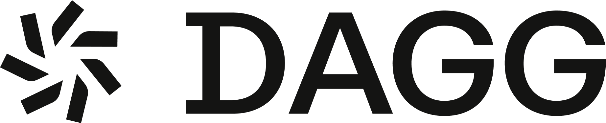

Dagg brings strategic judgment, company-specific context and production engineering to one question: what should change — and then makes the change real.
Most companies start from a list of what could be automated. That list is always long, and working through it in order is how a transformation spends two years arriving somewhere nobody wanted to be.
The order that matters is the other one: what must stay human, what should simply stop, and what is left. Everything after that is execution.
Done rarely, by people who are good at it, in a process that is stable. Automating moves the cost to maintaining the automation.
The step exists because a system once could not do something. Asking whether it still has to exist removes it without software.
The work is right and the rules hold. What is missing is that a person is carrying it between systems that do not speak.
It is not slow because people are slow. The software underneath models something the company stopped doing.
The output has no reader. Nobody finds this without following the work to where it ends.
Three of the five mean nothing gets built. Saying so before the work starts costs us engagements. It is cheaper than saying it after.
What a company knows about itself sits in a form nobody can query: in the judgement of the person who has done the job for nine years, in the exception nobody documented, in the meeting where a decision gets made again because the reason was never written down.
Getting that out is not a survey and it is not a workshop. It is sitting with the people who do the work until the difference between the process and the practice becomes visible — and then crossing things out.
That is the part that cannot be bought as software, and it is where an engagement actually spends its time.
An agent can rank a backlog. It cannot tell you that the workflow everyone hates is not the one costing you money.
Money leaving, a document going to a third party, a customer being told something. Decided in advance, not discovered in production.
The exception the process never described. The agent hands it back rather than guessing, and the answer is written into the record.
Readable months later, when the question is why. This is usually treated as compliance overhead. It is what makes the other three enforceable.
People move to specifying and verifying. That is the actual change, and it is the part that has to be designed rather than assumed.
A system that runs without anyone accountable degrades quietly, and the first person to notice is a customer.
An agent that acts inside a company needs bounds it cannot argue with, an escalation path decided in advance, and a record somebody can read months later when the question is why.
The record is usually treated as compliance overhead. It is the thing that makes the first two enforceable — and it is what turns a decision made once into a decision that stays made.